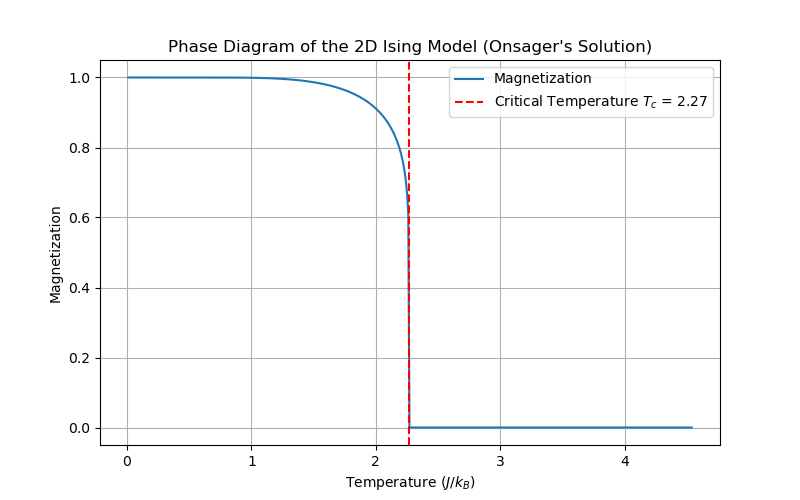

Finite dimensional Ising models#
The all-to-all coupling is physically unrealistic because, in our universe, degrees of freedom (d.o.f.s) are arranged in space and interact locally.
No phase transition in 1D#
At the extreme opposite end is the 1D Ising model, which is defined by the Hamiltonian
Do we observe the same phase transition (qualitatively and quantitatively) as in all-to-all?
The surprising answer is that the 1D Ising model admits no phase transition at all.
Order is distroyed at any finite temperature by the formation of domain walls, which simply are the sites where the order changes from all up to all down:
\(\uparrow \uparrow \uparrow \downarrow \downarrow \downarrow\)
We can imagine any microstate and introduce a domain wall between any two ordered spins (\(\uparrow \uparrow\), \(\downarrow \downarrow\)) by flipping all spins, say to the right of the site, e.g.,
\(\uparrow \uparrow \uparrow \downarrow \downarrow \downarrow \downarrow \downarrow \downarrow \downarrow \uparrow \uparrow \quad \rightarrow \quad \uparrow \uparrow \uparrow \downarrow \downarrow \downarrow \downarrow \downarrow \uparrow \uparrow\downarrow \downarrow \)
From the Hamiltonian above, it is clear that introducing a domain wall into a given microstate costs an energy \(\Delta=2 J\).
Boltzmann therefore tells us that
Because interactions are nearest-neighbor only, we therefore have effectively a lattice gas of d.w.s with only hard-core interactions. For large \(\beta \Delta\), the expected number of d.w.s is \(N p_{d.w.}\approx N e^{-\beta \Delta}\).
We can say more about the location of those d.w.s by studying the correlation function
Thus, if \(p_m\) is the probability to find \(m\) domain walls between sites 0 and \(r\), then we express the correlation function as
Since the d.w.s are non-interacting, except for hard-core interactions, \(p_{m}=\) Binomial distribution of \(m\) successes given \(r\) trials if success rate is \(p_{d.w.}\),
But the right-hand side is just the binomial expansion of the \(l^{\text{th}}\) power of \(1-p_{d.w.}\),
where the correlation length is given by
where the last expression holds if \(p_{d.w.}\ll1\) is small.
The interpretation of the above result is that the size of blocks of uniform spin are randomly distributed with a characteristic size \(\xi\). In particular, correlations decay to \(0\) for any temperature as the distances become large, $\( \Rightarrow \lim _{\sigma \rightarrow \infty}\left\langle\sigma_{0} \sigma_{\gamma}\right\rangle=0 \quad \forall T>0 \;. \)$
Thus, there is no long-range order. There is no phase transition, the spin chain is always in a paramagnetic phase.
Full solution of the 1D Ising model#
It’s illuminating to confirm these results also by solving the 1D Ising model exactly. In particular, we will see that the free energy is an analytic function (no singularities!).
The 1D model (unlike 3D!) can be solved exactly using “transfer matrix” method. First, consider \(B=0\) case:
Define the \(2 \times 2\) matrix \(T_{\sigma, \sigma^{\prime}}=e \beta J \sigma \sigma^{\prime}\)
The partition function can then be rewritten as
But this is just matrix multiplication!
Next, with \(B \neq 0\)
For any finite \(N\), we have to fix the boundary conditions. For convenience, we choose periodic boundary conditions (ie. a ring) where the state of spin N is identified with the state of spin 1. We then obtain
The benefit of realizing that there’s a matrix multiplication under the hood of the partition function is we can analyze powers of the transfer matrix \(T\) simply in terms of its eigen spectrum. You’ll study the case \(B\neq 0\) study in HW3.
Here, we focus on \(B=0\), for which \(\lambda_{ \pm}=e^{\beta J}\pm e^{-\beta J}\)
Note that \(\frac{\lambda_{-}}{\lambda_{+}}=\tanh (\beta J)<1 \quad \forall \beta J\).
So \(\lim _{N \rightarrow \infty} Z_{N}=\lambda_{+}^{N}\left(1+\left(\frac{\lambda_{2}}{\lambda_{i}}\right)^{N}\right) \longrightarrow \lambda_{+}^{N}\), implying a free energy of
Note: \(F(T)\) is analytic in \(T\), unlike in case of the all-to-all Ising model. Im the HW, you’ll check that \(X=-\left.\partial_{B}^{2} F(T, B)\right|_{B=0}\) is regular \(\forall T\).
\(\rightarrow\) There’s no phase transition.
Entropy density follows from
The energy density follows from
Plots of these functions are smooth (show figure).
What are the first two moments of the magnetization?#
When \(B=0, T > 0\), then \(\langle m \rangle=0\) by symmetry;
In fact \(H[\sigma]=H[-\sigma]\) has \(Z_2\) “Ising” symmetry.
\(\rightarrow\) all odd moments vanish.
The same is true, of course, for the all-to-all Ising model. How can we then get a ferromagnetic phase with non-zero extensive magnetization? We need to apply a tiny but non-zero magnetic field to bias the spins. This is an order of limits issue: \(\lim _{N \rightarrow \infty}\) and \(\lim _{B \rightarrow 0}\) do not commute! You’ll explore this in HW3.
Let’s also see what we get for the correlation function \(C(r) \equiv\left\langle\sigma_{r} \sigma_{0}\right\rangle\) using transfer matrices. Does it match up with the domain wall picture from above?
Using the full microstate distribution in terms of a product of transfer, we can express the expectation of the two focal spins \(0\) and \(r\) as
Introducing \(\hat{\sigma}_z \equiv\left(\begin{array}{cc}1 & 0 \\ 0 & -1\end{array}\right)\), we can write this as the matrix product
where we used the cyclic property of the trace.
Introduce the eigen system of \(T\) :
The sum of \(\beta\) is dominated by \(\beta=+\) because of the extensive exponent in the fact \(\lambda_{\beta}^{N-r}\). Then, for \(\left\langle\alpha\left|\sigma^{2}\right|+\right\rangle \) to be nonzero, we must have \(\alpha=-\). So, we obtain the simple result
Since \(\frac{\lambda_{+}}{\lambda_{-}}=\tanh \beta J=\frac{e^{\beta J}-e^{-\beta J}}{e^{\beta J}+e^{-\beta J}}=1-2 \underbrace{\frac{e^{-\beta J}}{e^{\beta J}+e^{-\beta J}}}_{p_{d.w.}}\), we get \(\xi=\frac{1}{\ln \left(1-2 p_{d.w.}\right)}\) as in domain wall argument.
Existence of a phase transition in 2D#
In 1D, long-range order is destroyed by defects that cost a finite amount of energy. Does the same argument apply to 2D? We will see: no!
In 2D, a domain wall is a 1D object, which costs \(\Delta E=2 J \cdot l\) where\(l\) is the length of domain wall.
In 1D, any finite density “of domain walls destroys order at scale \(\xi \sim \frac{1}{4 d \omega}\) But in 2D, a finite density of small domain walls doesn’t destroy order:

In the above image, despite the red zones of resistance, there is a percolating path for the blue order.
So, what matters is the size \(l\) of the domain walls. Order is destroyed if domain walls of size \(l \sim L\) become favorable.
So the question is how
behaves.
In \(1 D\), the only source of entropy was where the d.w. is: \(S \sim \operatorname{lu}(L)\) for 1 domain wall.
But in 2D, there are many ways to make a wall of length \(l\). For example, for \(l=12\):

Counting \(S(l)\) exactly is a tricky combinatorial problem. But all we really need to know is that for \(l \gg 1, S(l) \cong S_{0} \cdot l\) (extensive). To see why, let \(\Omega\left(l, x_{0}, x_{1}\right)\) denote the number of ways a string of length \(l\) connects two points \(x_{0}, x_{1}\) along the \(x\)–axis:

Clearly,
If we fix \(x_{1}-x_{0}=\frac{l}{\alpha}=x_{2}-x_{1}\), then \(S\left(2 l, x_{0}, x_{0}+\frac{2 l}{\alpha}\right) \geqslant S\left(l, x_{0}, x_{0}+\frac{l}{\alpha}\right)+S\left(l, x_{1}, x_{1}+\frac{l}{\alpha}\right)\), or defining
we get
This requires \(S(l) \cong S_{0} \cdot l\) or faster growing. But faster is impossible! (why?)
So,
Key result:
For \(T<\frac{2 J}{S_{0}}\), large domain walls are forbidden: long-range order \(\Rightarrow\) ferromagnetic phase
For \(T>\frac{2 J}{S_{0}}\), large domain walls are favored: no long-range order \(\Rightarrow\) paramagnetic phase.
Remarkably, the 2D Using model admits an exact solution (due to Lars Onsager).
One finds
For simplicity, we’ll set (J/k_B = 1) to express temperature in units of \(J/k_B\). The spontaneous magnetization for \(T < T_c\) is given by
which shows a markedly different exponent for the behavior near the critical point. It thus turns out that locality gives rise to nontrivial fractal structure described by 2D “conformal field theory” (see Physics 212).
Finally, here’s the zero field phase diagram 